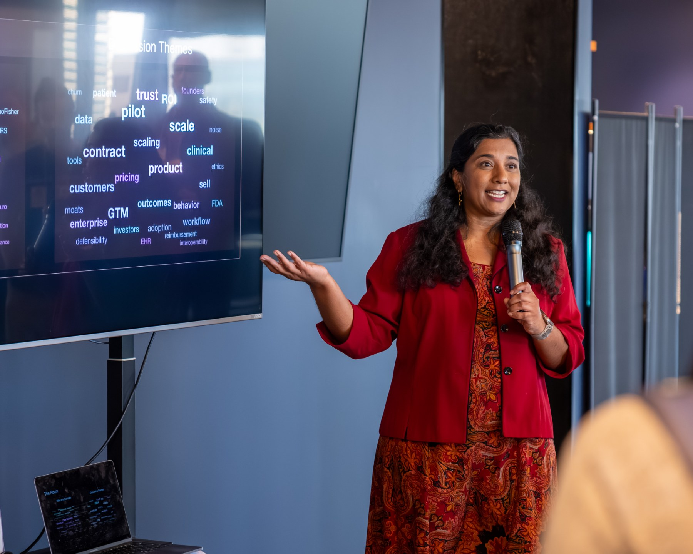

Arvita Tripati helps healthcare executives, boards, investors, and product leaders understand why promising AI initiatives fail to produce measurable value — and what leadership must change for them to survive deployment, scrutiny, and scale.
Her talks move beyond demonstrations, abstract governance principles, and predictions about the future of AI. They examine the operating decisions that determine what work disappears, what risk remains, whether the economics survive implementation, and who has the authority to act.

Nearly two decades building healthcare technology under real constraints
Building and scaling regulated healthcare technology
Across AI, diagnostics, clinical trials, connected health, and cell and gene therapy
Product, engineering, regulatory, quality, security, and privacy
Client-attributed value from an accelerated launch
Why technically successful AI fails to create enterprise value
Best for
Healthcare CEOs, boards, operating partners, investors, health-system leaders, portfolio-company executives, senior functional teams
The model performs. The pilot succeeds. Leadership announces an AI strategy. Then the initiative stalls.
Clinical, security, compliance, finance, and operations each respond rationally to risks the AI strategy failed to address. The result is a technically successful initiative whose economics and workflow cannot survive production. Arvita shows where the value gets trapped, and which operating decisions release it.
Why the model can work while the product — and the organization around it — still fails
Best for
AI and product leaders, founders, enterprise buyers, CAIOs, CDAIOs, legal and risk leaders, regulated-technology teams, executive education programs
Most AI products do not fail because the technology cannot perform. They fail because the organization has not built the infrastructure required to make defensible decisions about claims, evidence, autonomy, oversight, economics, and accountability.
That trust debt accumulates quietly — an unsupported claim, a limitation Sales avoids, a governance committee with no authority — then comes due through a stalled contract, failed deployment, or an incident no one is prepared to own. Drawing on her forthcoming book, Arvita gives leaders a way to distinguish among:
The infrastructure required for the next consequential decision.
Work that may become necessary later but does not yet address a real risk or commercial need.
Artifacts that create the appearance of responsibility without changing decisions or giving anyone authority.
Why regulatory achievement does not create a market
Best for
Medtech, diagnostics, SaMD, digital therapeutics, healthtech founders, investors, accelerators, product teams, commercialization leaders
A clearance, authorization, or reimbursement code establishes permission to sell. It does not establish who will buy, why they will change their workflow, how implementation will be funded, or whether the economics work after adoption.
Regulatory chooses a pathway, Clinical builds evidence, Commercial picks a buyer, Product builds the workflow — each independently. By the time the assumptions collide, the company may have spent years pursuing a market that cannot buy the product as designed.
The objective is not a longer market-entry plan. It is knowing which market can buy, and what the company should prove before committing more capital.
Arvita’s talks are designed for audiences responsible for making consequential choices, not merely learning about AI. Depending on the audience, sessions may examine questions such as:
Each session is adapted to the organization, sector, and decisions facing the audience.
Attendee conversation following a healthtech session hosted at Silicon Valley Bank.
Clear, candid talks that challenge conventional assumptions and give audiences a practical framework they can apply immediately.
Private sessions organized around a specific strategic decision, portfolio question, operating challenge, or AI investment thesis.
Working sessions in which participants apply the ideas to an active initiative, product, investment, or operating model.
Facilitated conversations for CEOs, investors, operators, board members, or functional leaders confronting similar questions.
Arvita Tripati is a healthcare technology operator and advisor who has spent nearly two decades making the cross-functional decisions that determine whether regulated products reach the market, clear enterprise scrutiny, and scale economically — leading product, engineering, regulatory, quality, privacy, security, and compliance functions across AI-enabled devices, clinical-trial platforms, diagnostics, connected health, and cell and gene therapy.
She has been both the vendor trying to clear enterprise scrutiny and the executive whose signature authorized technology for use — a perspective that is simultaneously commercial, operational, technical, and grounded in regulated reality.
She is the founder of Vahana Labs and co-author, with Kimberly Bloomston, of the forthcoming Built to Survive: Building Trusted AI Products and Organizations, and teaches and advises through MedTech Innovator, BioTools Innovator, Alchemist Accelerator, Redesign Health, and Plug and Play.
Full backgroundArvita has spoken, taught, advised, or served as an industry expert for organizations including:
At the CPO Summit, Arvita examined why successful healthcare AI pilots so often fail to become durable operating capabilities.
The talk can be adapted for executive, investor, healthcare-services, and regulated-product audiences.
Ask about this keynote →Building trusted AI products and organizations
Explore the bookCo-authored with Kimberly Bloomston — a practical field guide for leaders who must build, buy, deploy, commercialize, and stand behind consequential AI.
It explains how trust debt accumulates — and how to decide what must be built now, what can responsibly be deferred, and what is merely theater.
The most useful starting point is the decision your audience is trying to make.
Share the event, audience, and question in front of them. Arvita will recommend the talk or format most likely to create a useful and candid conversation.
Invite Arvita to speak →